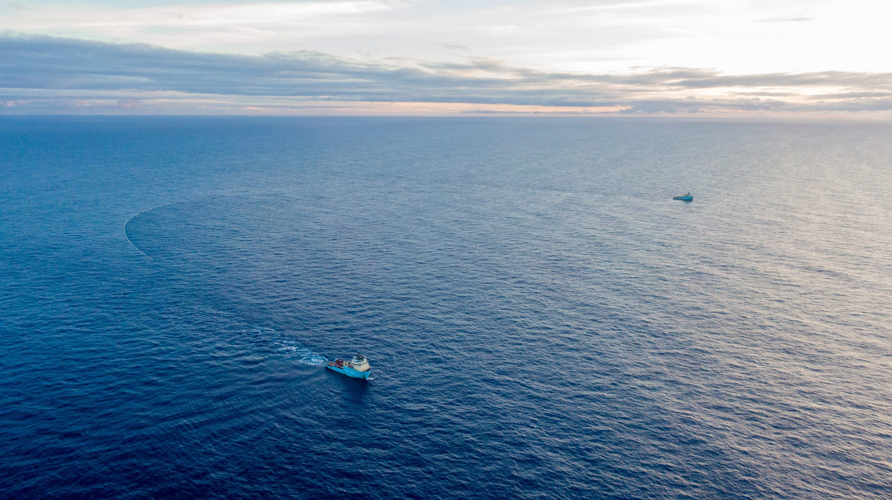

The ocean is one of the most important parts of Earth. It supplies more than 50% of the oxygen we breathe, supports millions of marine species, regulates our planet’s temperature, and provides food for billions of people. Unfortunately, human activities such as plastic pollution, overfishing, and chemical waste have put our oceans at great risk.
This website supports United Nations Sustainable Development Goal 14 (Life Below Water), which aims to conserve and sustainably use the oceans, seas, and marine resources. Through this website, you’ll learn about the causes of ocean pollution, their impacts on marine life, and what we can do as global citizens to protect the ocean for future generations.
Together, we can take action to build a cleaner and healthier ocean — and a cleaner future for everyone.
Ocean pollution comes from many different human activities. These are the major reasons our oceans are suffering today:
If these issues continue, our oceans may not be able to support life as they do today. This is why SDG 14 is extremely important.
Although ocean pollution is a serious global issue, the good news is that all of us — students, families, and communities — can take meaningful action to protect the ocean. Here are some solutions:
Protecting the ocean starts with small choices — and your action matters.